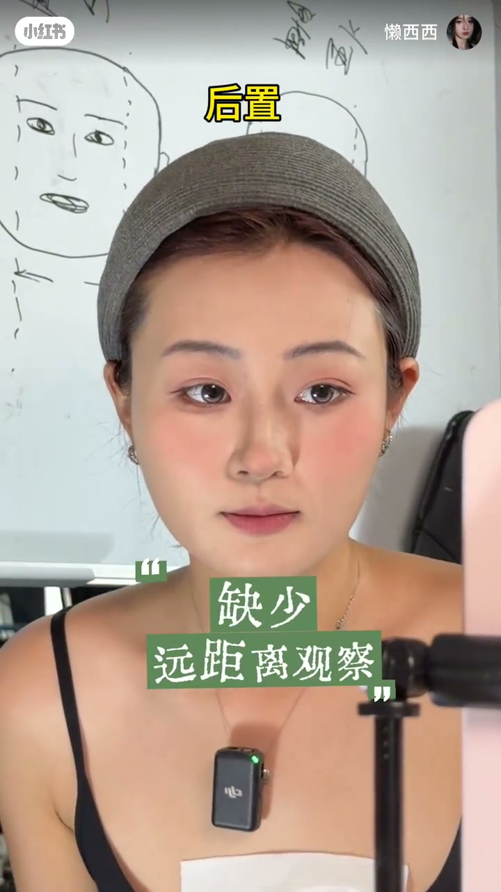
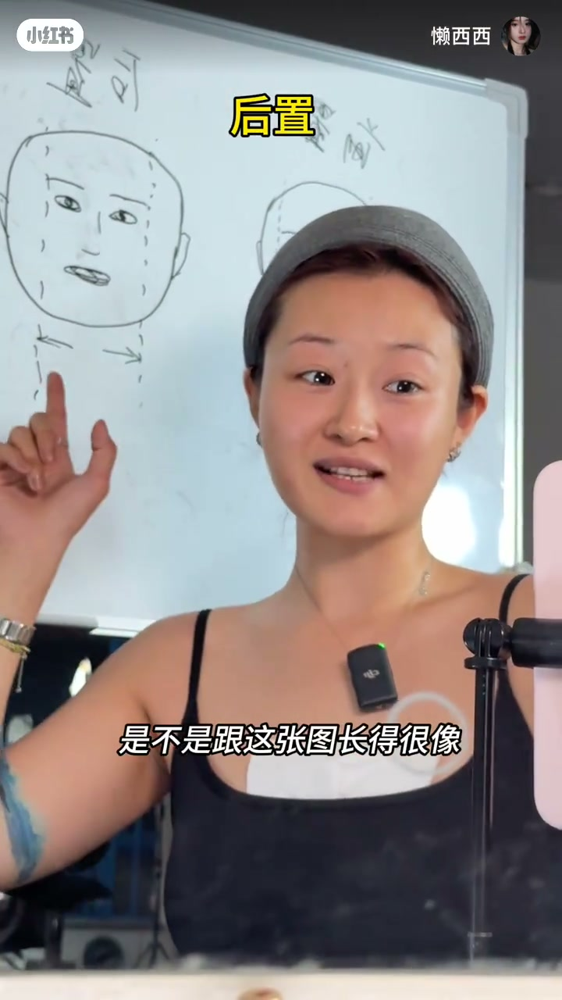
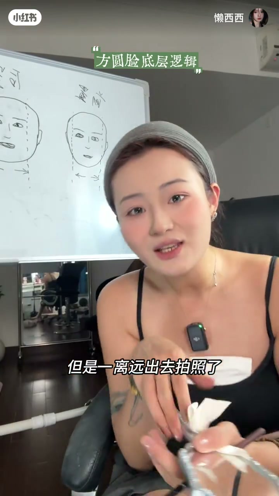
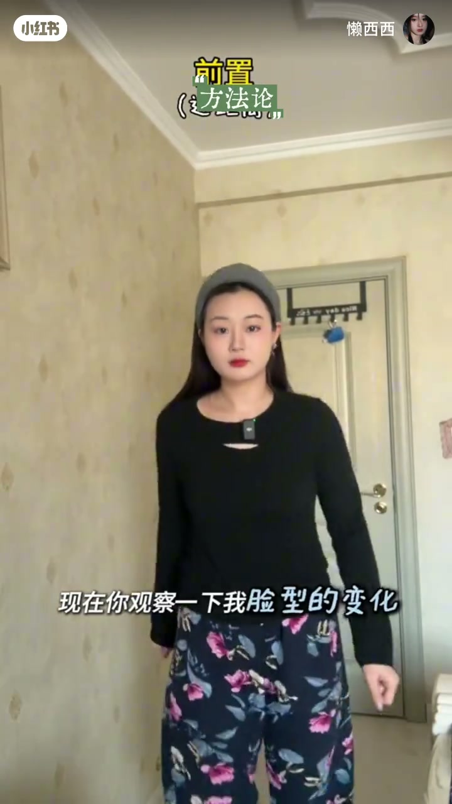
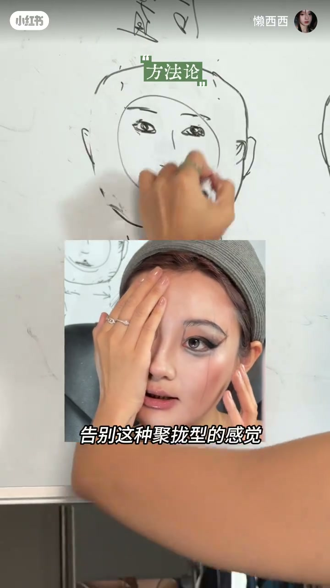
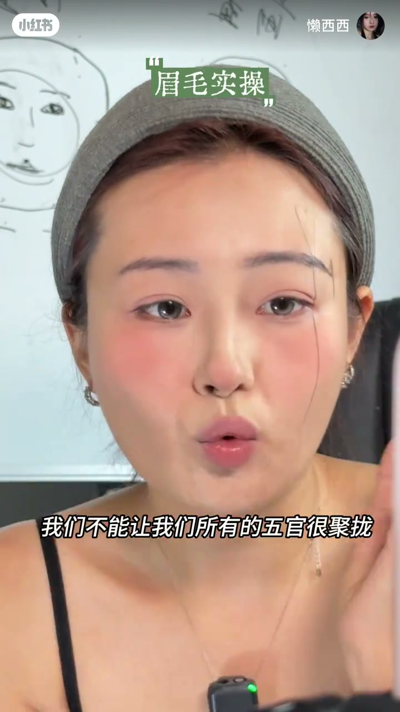
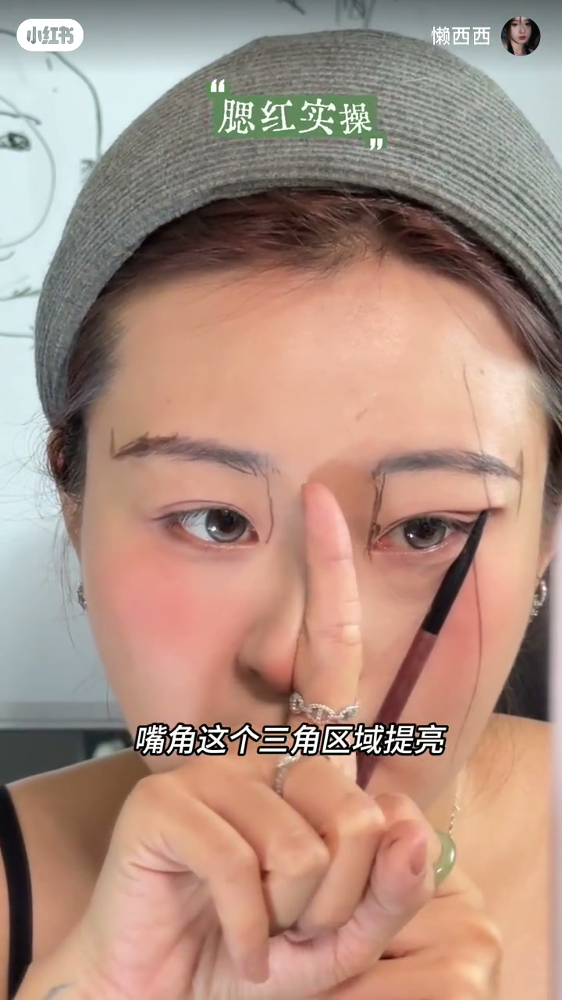
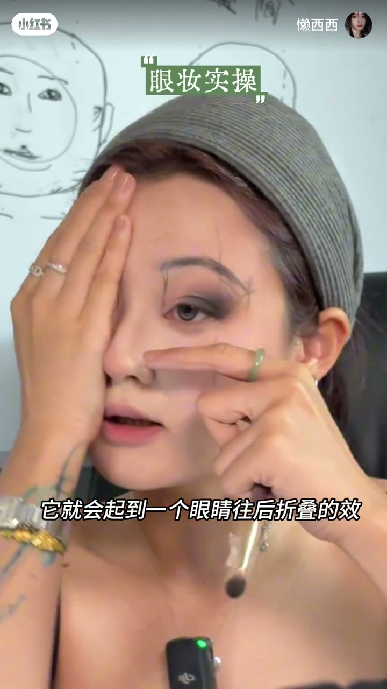
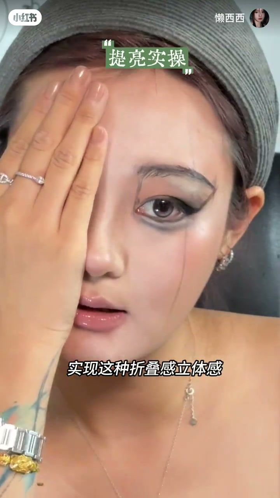
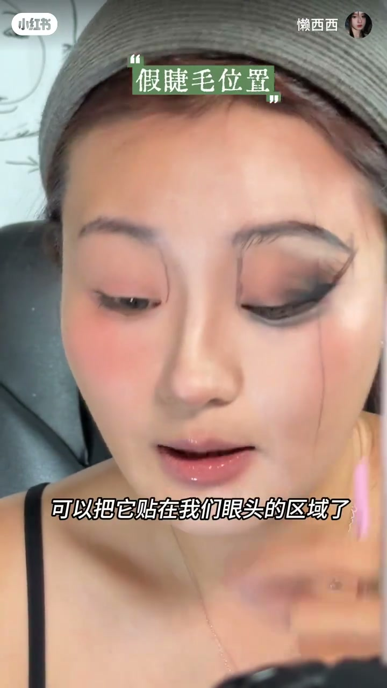

内容要点
一支 5 分 37 秒的方圆脸化妆开窍课：核心观点是「你没有远距离观察过自己化的妆」。前置镜头怼脸是内轮廓视角，后置镜头才是别人眼中的你——外轮廓留白宽。节目给出两大方法：跟着后置拍摄的方圆脸博主学；化妆时退到一臂半距离看整体。然后实操演示眉毛拉长、腮红后移、眼妆外晕、卧蚕下移、嘴唇画饱满、体量到位等完整改妆逻辑。
知识结构
方圆脸化妆无法开窍的根本原因是没远距离观察过自己的妆。前置怼脸是鹅蛋脸视角，后置才是真实的方圆脸——外轮廓留白宽。
跟着方圆脸博主学且必须是后置拍摄；化妆时退到镜子一臂半距离看整体妆面。会发现眉毛不够长、腮红堆在中间、五官挤在一起。
把脸想象成平面，取中间直线定眉尾长度。眉毛只拉长一点，整个脸就有被包裹住的感觉；眉头外移、眉尾拉长，五官不再聚拢。
侧面看腮红全坨在中间，外眼角到嘴角三角区域要提亮不能有腮红，腮红位置往后放才能专门收缩脸型，还能在额头外轮廓加收缩色增加折叠感。
眼影往外侧晕，范围是外眼角到眉尾的三角区；眼线填满斜切面影的三角区拉长眼睛；卧蚕画眼睛睁开的二分之一大，往下画减少面部留白。
五官画完后核心是体量到位，鼻子即使不会画鼻影，体量到位也能有折叠感立体感，侧边形成平行四边形视觉收窄；假睫毛贴在眼尾而非眼头。
方圆脸化妆开窍的关键是先建立「后置视角」：退后一臂半看整体。然后按外轮廓逻辑调整——眉毛拉长、腮红后移收缩、眼影外晕拉长眼型、卧蚕下移填留白、嘴唇画饱满、体量到位。五官舒展开，脸型自然变小。
00:00-00:30为什么你总是开不了窍
「我终于想明白了，方圆脸化妆始终无法开窍的根本原因——你没有远距离的观察过你化的妆。」一句话点破要害。
主播先用前置镜头演示：「现在是我怼脸前置的样子，是不是和后面这个图几乎一样？像一个很标准的鹅蛋脸，面部的留白非常小。」但切到后置，「我的脸型是不是跟这张图长得很像？外边圆的面部留白非常的宽。」
「如果我们总是用前置看自己、离镜子很近地化妆，那么当你最后化完妆，在别人的眼中可能就是那个样子。你一直化的都是我们的内轮廓，容易忽略掉我们外轮廓的区域。」这也是为什么怼脸时觉得自己化得不错，一离开镜子去拍照就觉得哪哪都不对。


00:30-01:10两条路：找对博主，退后看妆
「很多美妆博主是天生的窄脸，它的前置和后置变化不大，所以即使很近距离的怼脸化妆，最后效果依旧好看。可我们的脸型不一样，那常规的妆就不适合我们。」
大家应该怎么选？第一个方法：「找像我这样的方圆脸博主，并且必须要是后置镜头拍摄的。」第二个方法：「我们化妆的时候，一定要花一会功夫往后撤一撤。」
操作细节：面前放一面镜子，离它大概一臂半的距离，看整体脸上的妆面。「这个时候你会发现：我们的眉毛长度永远不够；我们的腮红稍微侧一个脸，这一块特别红；会感觉我们整个五官都集在中间。」
意识到问题，解法就清晰了：把眉毛拉长一点、眼尾也拉长、腮红往侧面放、嘴唇化厚化大——「我们要想办法将我们的五官去舒展开、去填满。」


01:10-02:00实操一：眉毛长度与五官舒展
「底层逻辑大家明白了，现在我们粗糙地给大家实操一下。」在这种后置视角下，「请把我们的脸先想象成一个平面，那么就能找到真的属于我们的外边圆留白。」
以平面的视角取它的中间直线，「这个就是最适合我们扩面型脸的眉尾长度。」主播现场演示：「我只拉长了它们这么一点点，是不是感觉我整个脸有被包裹住？」
同理，「我们不能让我们所有的五官很聚拢，所以我们要把我们的眉间往外画一点，眉头和眼角是一条直线。」定好位置再补齐。主播还提醒：详细的步骤画法可以看合集里的「方圆脸五官画法」。


02:00-03:00实操二：腮红后移，专门收缩脸型
「接着我们的腮红，我转到侧面情况下，它全部都坨在这一块，这一块的留白是不是感觉白白的空空的？」
正确做法：「我们只有实现外眼角到嘴角这个三角区域提亮，不能有任何的腮红。而把腮红的位置往后放——也就是这个刷子往后的这一片区域。我们打腮红才能够专门的收缩脸型。」
主播在三角区提亮、用收缩色腮红往后扫，「其实就相当于我们全程都打在我们全国最突出的这个位置一直到耳前。因为用的是收缩色，所以你不用担心它会显脏。」
她还发现一个关联：「我们外眼角的这条线，其实就是我们额头外轮廓的一个位置，那这一块之后是不是也可以去打上收缩色的颜色，让我们的脸部有更加折叠的效果。」
「现在再来给大家对比一下，看到没？我就改变了我的腮红和我的眉毛，就可以让我的脸型实现一个非常小脸、舒展开的效果、提拉的效果。」


03:00-04:30实操三：眼妆外晕与卧蚕
「如果我要化眼妆，是不是也是一个道理？我要学会把颜色往外侧去晕它。」眼影范围就是「外眼角到眉尾这个位置」，在这个三角区加深，「它就会起到一个眼睛往后折叠的效果。」
眼线的技巧：眼睛睁开，画好斜切面影后「它是有一个三角区的，只要把这块填满，我的眼睛就能起到一个拉长的效果。」下眼睑也是「这个斜切面沿下来的感觉，让它有个包围感」，再往外晕开。
卧蚕呢？「就是我眼睛睁开的二分之一大，你不要管你原来的这个粗度在哪。卧蚕只有往下画了，才能减少我们面部的留白。」
嘴唇也有讲究：「用一个裸色性质的（唇釉）画出去，一定要画出去，并且把它晕开，你的嘴巴才能起到一个丰满的效果。再叠加一点唇蜜，就会呈现一个保存变厚的感觉，填补我们的面部空白。」

04:30-05:37体量到位，脸自然就小了
「当你可以讲好我这些五官了之后，最后就只有一个核心了，那就是体量。」主播用一个夸张的手法展示体量范围：「只要这个体量到位，我们的宽脸就能比窄脸。」
「其实你不会画什么鼻影，只要你这个体量到位了，你的鼻子依旧能够实现这种折叠感、立体感。你就会发现我们的脸侧边形成一个很好看的一个平行四边形，它就会让我们的脸看着视觉上有收窄的效果。」
最后是假睫毛：「大部分的方圆脸都属于五官有点集中的类型，那我们贴假睫毛，是不是就不可以把它贴在眼头的区域了？它只会让我的眼睛看着更往中间缩。所以我们应该贴在眼尾。」如果眼睛本身很近，还要贴在眼睛往外的皮肤上，「它可以很好地把我们眼睛拉长。」
收尾：「如果你们想要学再详细一点的话，可以去看我的一镜到底系列。希望你们喜欢。」

完整转录（179段）
以下文本由 Whisper medium 模型自动转录，可能存在少量识别误差，已尽可能修正。
我终于想明白了
方圆领化妆始终无法开窍的根本原因是
你没有远距离的观察过你化的妆
现在是我怼脸前置的样子
是不是和后面这个图几乎一样
像一个很标准的鹅蛋脸
面部的留白非常小
可是倘若我切到后置
大家再来看一下
我的脸型是不是跟这张图长得很像
外边圆的面部留白非常的宽
所以如果我们总是用前置看自己
去离镜子很近的化妆
那么当你最后化完妆
在别人的眼中可能就是这个样子
你一直化的都是我们的内轮廓
容易忽略掉我们外轮廓的区域
所以这也是为什么
你明明在怼脸镜头下
你感觉自己化的挺不错的
但是一离一远出去拍照了
就发现哪哪都不对
因为其实很多美妆布置
它是天生的小宅恋
它的前置和后置变化不大
所以即使它很近距离的怼脸去化妆
最后出来的效果依旧也能好看
可我们的脸型不一样
那常规的妆就不适合我们
大家应该怎么去选
第一个方法
找像我这样的方圆连博主
并且必须要是后置镜头拍摄的
第二个方法就是我们化妆的时候
一定要花一会功夫往后撤一撤
我的面前放了一张镜子
离它大概一臂半的距离
然后你去看一下整体脸上的妆面
这个时候你会发现
我们的眉毛长度永远不够
我们的腮红稍微侧一个脸
这一块特别红
会感觉我们整个五官都集在中间
咱们化妆应该是不是想方法
把我的眉毛拉长一点
把我眼纹也拉长
把我的腮红灭迹放在这一块
嘴唇化厚化大
我们要想方法的是
将我们五官去舒展开去填满
那么我是不是就可以告别
这种巨龙形的感觉
底层逻辑大家明白了
现在我们粗糙的给大家始操一下
让你们更好的理解
在这种后置视角就下
请把我们的脸先想象成一个平面
那么就能找到真的属于我们的外边圆流白
我们就以平面的视角取它的中间直
这个就是最适合我们
扩面型脸的眉尾长度
我只拉长了它们这么一点点
是不是
感觉我整个脸有被包裹住
同理
我们不能让我们所有的五官很聚拢
所以我们也要把我们的眉间去往外画一点
眉头和眼角是一条纸线
定好粗糙的给大家补齐
今天讲的全部都是原理
如果大家想要更详细的一个步骤画法
可以去看一下我合集
它有一个专门的方圆流五官画法
搭根链的时候就记得多去远距离看一看
再看看我的视频能不能跟我达到一样类似的位置和效果
接着我们的腮红
我转到侧面情况下
它全部都坨在这一块
这一块的流白是不是感觉白白的空空的
我们只有实现外眼角到嘴角这个三角区域
提亮不能有任何的腮红
而把腮红的位置往后放
也就是这个刷子往后的这一片区域
我们打腮红才能够专门的收缩脸型
原理明白了
我们就在这个区域
哎提亮
再用收缩色腮红
其实它的范围就是我们画的这条线
往后
其实就相当于我们全程都在打在我们全国最突出的这个一直到耳前
因为用的是收缩色
所以你不用担心它会显脏
并且我发现我们外眼角的这条线
它其实就是我们额头外轮廓的一个位置
那这一块之后是不是也可以去打上收缩色的一个颜色
让我们的脸部就会有更加有折叠的效果
现在再来给大家对比一下
看到没
我就改变了我的腮红和我的眉毛
就可以让我的脸型实现一个非常小脸
舒展开的效果
提拉的效果
好
那么如果我要化眼妆
是不是也是一个道理
我要学会把颜色
往外侧去晕它
而这个眼影范围
它其实就是我们画的外眼角到我们的眉尾这个位置
来看到没有
我画的这块三角形的阴影
要让这一块有折叠
我现在上的颜色比较深
反正大概的意思就是我们这样子
往这一块的三角区加深
它就会起到一个眼睛往后折叠的效果
想要画眼线
就是把眼睛睁开
看到没
我刚刚画好了这个斜切面影
发现没
它是有一个三角区的
只要把这块填满
我的眼睛就能起到一个拉长的一个效果
那我们的下肢
是不是也是这个斜切面沿下来的感觉
让它有个包围感
就画好我们的下肢了
你再把它往外头晕晕散一散
那么我的卧蚕呢
就是我眼睛睁开的二分之一大
你不要管你原来的这个粗度是在哪
卧蚕只有往下画了
才能减少我们面部的留白
而唇管饱满的核心呢
其实就是用一个裸色性质的这种
画出去
一定要画出去
并且我们把它晕开
你的嘴巴才能起到一个丰满的一个效果
再叠加一点唇蜜
它就会呈现一个保存变厚的感觉
填补我们的面部空白
当你可以讲我这些五官了之后
最后就只有一个核心了
那就是体量
只要这个体量到位
我们的宽力就能比窄脸
我现在是以一个夸张的手法
给大家看一下它的体量范围
大家就记住按我这个来
发现没
其实你不会画什么鼻影
只要你这个体量到位了
你的鼻子依旧能够实现这种折叠感
立体感
你就会发现我们的脸
它这侧边它形成一个很好看的一个平行四边形
它就会让我们的脸看着视觉上有收窄的一个效果
但是这边你会感觉还是一个大平面
那如果你想要剃假假毛
它的位置也很关键
其实大部分的方圆脸
它都属于五官有点集中的类型
那么我们剃假毛
是不是就不可以把它剃在我们眼头的区域了
它只会让我的眼睛看着更往中间缩
所以我们应该剃在眼尾
但是如果你的眼睛就特别近像我一样
我们不只要剃在眼尾
我们还要贴在眼睛往外面的皮肤上面
也就是这个地方
它可以很好地把我们眼睛拉长
如果你们想要学再详细一点的这个妆面的话
大家可以去看一下我的一睛到底系列
这个就是我们本期的请问教程
希望你们喜欢
拜拜